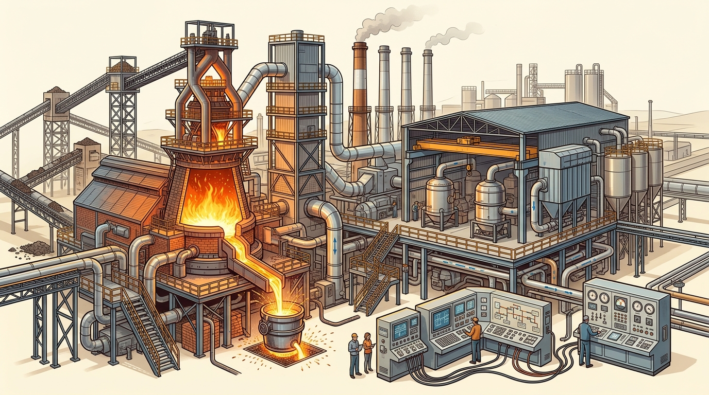
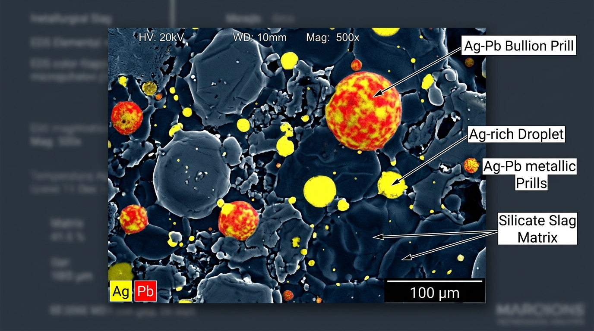
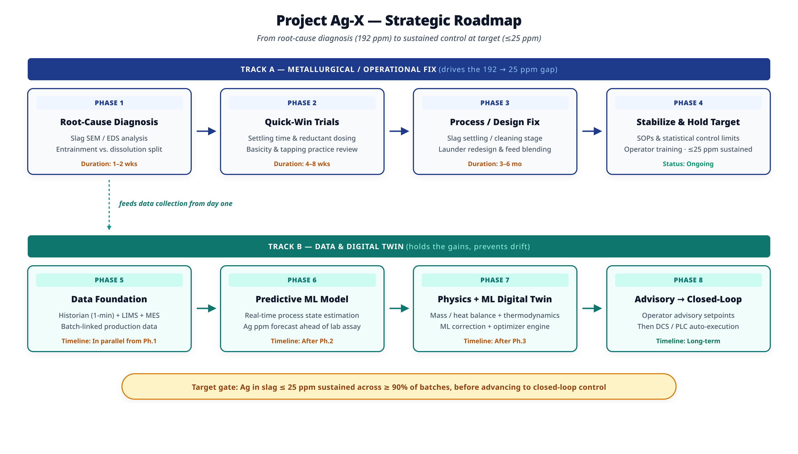
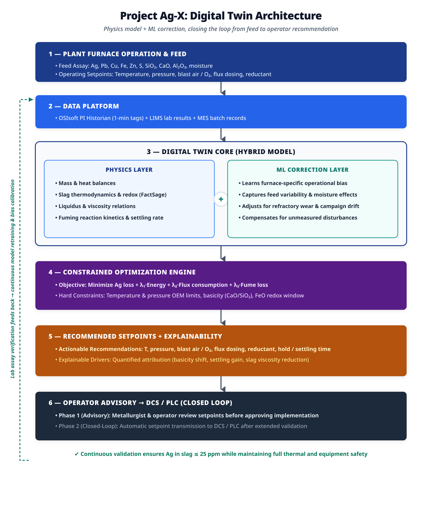
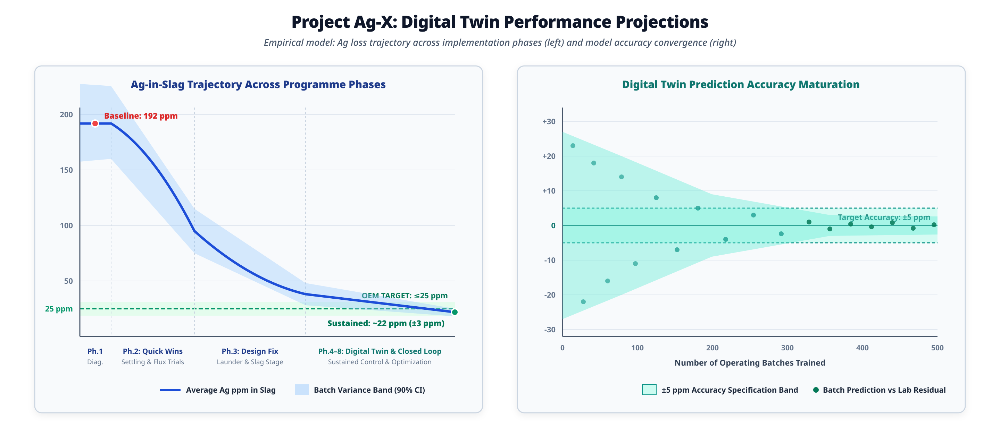

A dual-track engineering programme engineered to bridge the 192 ppm → ≤25 ppm deficit. Physical settling and redox interventions (Track A) combined with a physics-constrained AI Digital Twin (Track B) for sustained recovery.

SEM/EDS microscopy determines whether silver loss is caused by un-settled bullion prills or dissolved chemical species.
Microscopic bullion prills remain physically suspended in viscous slag and fail to settle before tapping.
Ionic silver dissolves into silicate melt as an oxide/sulfide complex at high FeO and oxidizing redox.
Volatile Ag sub-species vaporize in high-temp zones and report to baghouse flue dust.
SEM confirms suspended metallic droplets → Mechanical Entrainment dominates. Immediate focus: settling stage, hold duration (45 min), and launder fluid dynamics.
SEM shows uniform Ag dispersion without prills → Chemical Dissolution dominates. Immediate focus: FeO reduction, flux basicity (CaO/SiO2 = 1.15), and collector pool availability.

Cross-section showing Ag-Pb bullion prills (yellow/orange) mechanically trapped in the dense silicate matrix (dark grey), confirming physical settling priority.
Visualizing multi-phase behavior: submerged tuyere blast convection, slag/bullion separation, and real-time digital twin setpoints.
Track A physical fixes close the 192 → 25 ppm gap. Track B digital twin sustains long-term target compliance.

Direct physical levers that alter phase equilibria, settling residence, and slag rheology to eliminate loss at the furnace source.
Collects batch-linked historian data from Day 1, progressively activating predictive modeling and constrained optimization.
Slag SEM/EDS across batches; confirm entrainment vs dissolution split.
Extend settling time (45 min), optimize reductant dosing, and adjust basicity.
Slag settling stage, launder/taphole redesign, and raw feed blending.
Standard Operating Procedures and control limits for sustained ≤25 ppm.
OSIsoft PI historian (1-min tags) + LIMS lab data + MES batch linkage.
Real-time machine learning prediction estimating Ag ppm ahead of lab assay.
Mass/energy balance, slag thermodynamics, and ML correction layer.
Operator advisory dashboard evolving into DCS/PLC setpoint auto-execution.
Ag in slag ≤ 25 ppm sustained across ≥ 90% of production batches before advancing to closed-loop automation.
Combining first-principles slag thermodynamics with machine learning correction to eliminate operator variance and lock in the ≤25 ppm target.

Financial forecast based on plant annual throughput, silver commodity pricing, and target recovery compliance.
Adjust annual tonnage and market price to calculate net silver recovered and projected cash generation.
Target trajectory across phases and operational performance governance metrics.

| Key Performance Indicator | Baseline State | Target Specification | Cadence | Governance Owner |
|---|---|---|---|---|
| Average Ag in Slag | 192 ppm | ≤ 25 ppm | Per batch | Plant Metallurgist |
| % Batches ≤ 25 ppm | Under 15% | ≥ 90% | Weekly rolling | Operations Superintendent |
| Ag Recovery to Product | Sub-optimal | Maximize subject to ≤25 ppm | Per batch | Lead Process Engineer |
| Digital Twin Prediction Error | N/A (pre-build) | ± 5 ppm (Mature model) | Rolling 30-batch | Data / ML Lead |
| Energy Consumption / Batch | Baseline | No material increase vs baseline | Per batch | Energy & Utilities Lead |
| Flux & Reductant Consumption | Baseline | Optimized per thermodynamic window | Per batch | Pyrometallurgy Lead |
Synthesis of metallurgical diagnosis, digital twin architecture, and financial return.
The 192 → 25 ppm gap is primarily driven by mechanical entrainment of bullion prills. Track A physical settling and redox controls establish the low-loss regime; the Track B Hybrid Digital Twin locks in those gains with closed-loop thermodynamic safety envelopes.
Phase 1 SEM/EDS slag analysis delivers decisive metallurgical confirmation within 14 days.
Hard FactSage thermodynamic constraints ensure complete process safety before automated execution.
Over ₹140 Crore in recurring annual silver recovery with a project payback under three months.